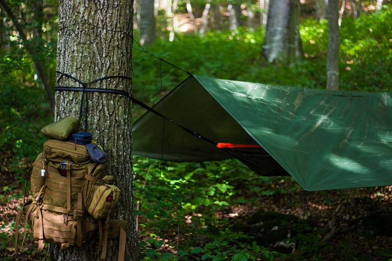
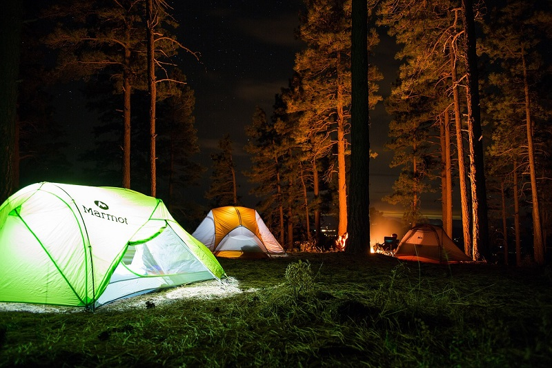
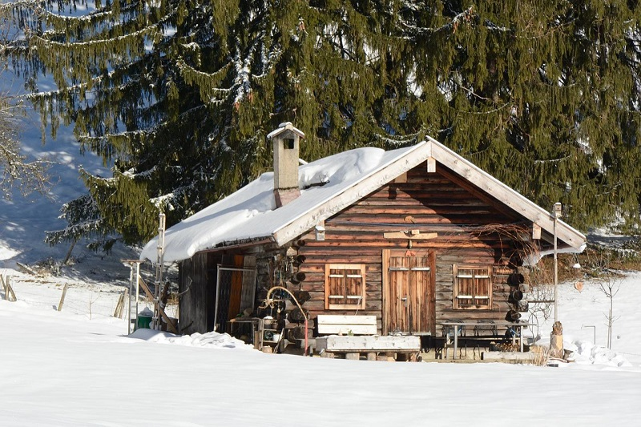
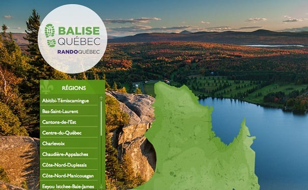
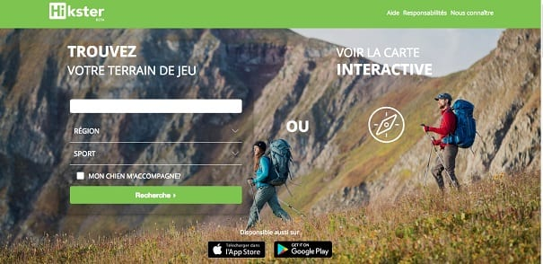
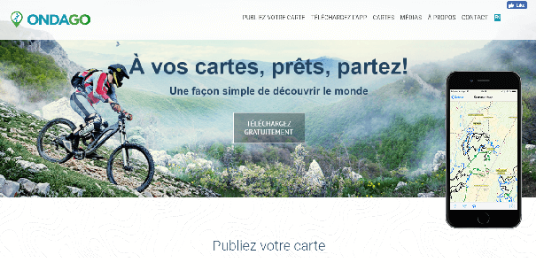
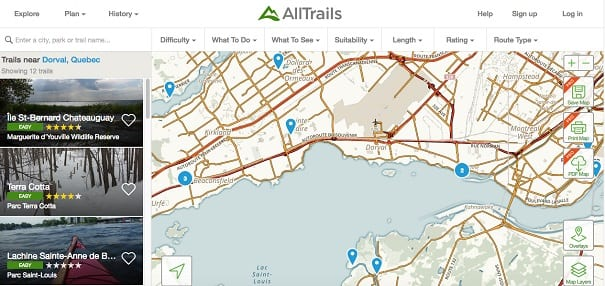
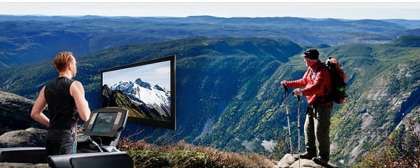

Les différents hébergement en randonnée
Pourquoi faire du camping en hamac ?
Si vous avez déjà passé une journée à la plage ou profité d'un séjour à la campagne, vous êtes certainement familier avec les hamacs. Ceux-ci sont incontournables lorsqu'il s'agit de décompresser et de tuer le temps. Leur doux et rythmique ballant a quelque chose d'hypnotique, tandis que l'élévation vous donne une impression d'apesanteur. Saviez-vous que les hamacs font aussi d'excellents systèmes de couchage en camping ?
GUIDE 101 DU CAMPING EN HAMAC
1- Pourquoi faire du camping en hamac?
2- Avantages par rapport aux tentes
3- Désavantages par rapport aux tentes
4- Équipement nécessaire
5- Comment s’installer
6- Trucs pour une première sortie
7- Autres alternatives à essayer

Dormir en tente une expérience particulière
Directement en contact avec la nature, cela me ressource d’une manière extra-ordinaire. Je m’endors avec les bruits de la nature, le souffle du vent contre la toile, le chant des oiseaux, le sifflement des chouettes, le grincement des arbres, …
Les liens utiles
Les 10 sites de campings gratuits au Québec
Règlement camping sauvage Canada
Campings du Québec
Le site officiel Parcs Canada
Guide du camping au Québec

Refuge ou chalet
Les adeptes de longue randonnée hivernale connaissent bien les refuges. Mais les nouveaux initiés à la recherche de belles conditions d’enneigement qui sont moins expérimentés apprécieront aussi ces abris pour passer la nuit qui sont situés près des sentiers.
Refuge $$
On y trouve lits, table et poêle à bois. Des toilettes sèches sont situées à l’extérieur. L'équipement fourni peut varier d'un refuge à l'autre ainsi que selon la saison.
Vous pouvez réserver une ou plusieurs places pour dormir et, selon la capacité du refuge, d'autres personnes pourraient s’ajouter. En journée, les skieurs et randonneurs s’y arrêtent aussi fréquemment pour une pause.
Chalet $$$
Toutes les commodités : éclairage, cuisinière, réfrigérateur, toilettes, eau chaude et douche, foyer ou poêle à bois, ainsi que l'équipement requis pour la préparation et le service des repas. Consultez la fiche technique du chalet lors de la réservation.
Table de pique-nique
Barbecue
Trou à feu

17 trucs et astuces pour passer une nuit au chaud dans son sac de couchage
Après une bonne journée de randonnée, une fois dans son sac de couchage, on ne rêve que d’une chose : une bonne nuit réparatrice au chaud. Pourtant, ça ne se passe pas toujours comme ça ! Qui n’a pas déjà eu une désagréable sensation de froid qui empêche de s’endormir ou réveille en pleine nuit ?
1 – Avoir un sac de couchage adapté
L’isolation de votre sac de couchage doit être adaptée aux conditions climatiques, c’est donc la première chose à considérer.
La taille du sac de couchage est également importante, un sac de couchage trop petit sera compressé et n’isolera pas bien alors qu’un sac de couchage trop grand aura des points froids.
2 – Déplier son sac de couchage le plus tôt possible
Il faut garder à l’esprit que c’est l’air emprisonné dans le garnissage (duvet ou fibres synthétiques) qui isole du froid.
3 – S’isoler du froid du sol
Le moyen le plus classique de le faire est en utilisant un matelas, mais on peut aussi le faire en utilisant des moyens naturels en plus, comme en mettant des brindilles ou des fougères sous son abri ou en choisissant de planter sa tente sur de l’herbe épaisse et sèche plutôt que sur un sol minéral.
4 – S’habiller correctement
S’habiller correctement ne veut pas dire empiler tous les vêtements que vous avez sous la main. Il faut privilégier les vêtements secs, respirants et respecter les 2 premières couches du système des 3 couches. Cela se traduit souvent par des sous-vêtements longs en synthétique ou en laine mérinos à même la peau et éventuellement une polaire ou équivalent par-dessus si ce n’est pas suffisant (haut et/ou bas). Attention à ne pas trop s’habiller au risque de transpirer dans vos vêtements et avoir froid par la suite.
Je vous conseille également de mettre les vêtements que vous risquez utiliser dans la nuit directement dans votre sac de couchage. Ils seront tout chauds au moment de les enfiler et vous pourrez les enfiler à l’intérieur du sac – en faisant simplement quelques contorsions. 😉
Note : n’hésitez pas à couvrir vos extrémités avec bonnet, chaussettes, gants… si les conditions le requièrent.
5 – Utiliser un drap de sac
Tant que l’on parle d’isolation, sachez qu’il est possible d’utiliser un drap de sac à l’intérieur de son sac de couchage, de préférence en soie et non en coton pour gagner quelques degrés si nécessaire. Cela permet également de ne pas trop salir son sac de couchage et préserver ses performances.
Il existe également des draps de sac thermiques qui font gagner plus que quelques degrés et permettent plus de polyvalence.
6 – Se couvrir la tête
Vous savez sûrement qu’une grande partie de la chaleur corporelle est évacuée par la tête. Si vous avez froid, essayez de vous couvrir la tête avec un bonnet, la capuche de votre sac de couchage ou même un turban fabriqué avec un vêtement – le « gain de chaleur » est toujours surprenant.
7 – Réchauffer ses pieds
Certaines personnes ont des difficultés pour dormir avec les pieds froids. Si vous êtes dans ce cas, vous le savez probablement. Dans ce cas, n’hésitez pas à dormir avec des chaussettes assez « chaudes » et à frictionner vos pieds pour les réchauffer (entre eux, sur vos mollets ou avec vos mains par exemple).
8 – Lutter contre l’humidité
Cette satané humidité, encore et toujours ! Il faut l’éviter à tout prix, en gardant ses affaires au sec dans la journée.
Il faut aussi faire attention à l’humidité du sol en choisissant bien son emplacement pour la nuit et en ayant une barrière vraiment imperméable.
En plus de ça, il faut également faire attention à la condensation qui est courante dans les abris/tentes et ne pas hésiter à l’essuyer dans la nuit si nécessaire.
Il est primordial de bien ajuster sa température corporelle (en ajoutant ou pas des vêtements et en ouvrant ou pas le sac de couchage) et ne pas avoir trop chaud au risque de transpirer puis d’avoir froid, le comble…
Evitez également d’enfouir votre tête dans votre sac de couchage (je sais c’est tentant) car votre respiration va ajouter de l’humidité à l’intérieur.
Je vous conseille également de prendre l’habitude de faire sécher ou d’aérer votre sac de couchage quand les conditions le permettent, ça évitera que trop d’humidité ne s’accumule dedans d’un jour à l’autre et ne diminue ses performances. C’est d’autant plus important pour les sacs de couchage en duvet qui sont plus sensibles à l’humidité.
9 – Faire attention à la transpiration
C’est la petite astuce glamour. 😉 Quand vous avez transpiré, se déposent sur votre peau et vos vêtements des sels. Ce sont d’ailleurs les traces blanches que vous pouvez parfois observer sur les t-shirts. Le problème est que ces sels ont tendance à absorber l’humidité et que même bien équipé et bien vêtu, vous pourriez avoir froid.
Je vous conseille donc d’utiliser des vêtements dans lesquels vous n’avez pas transpiré pour dormir. Je garde par exemple généralement une tenue sèche pour le soir et la nuit. Et, si vous en avez le courage et la possibilité, je vous conseille de vous laver ou de vous rincer, ça fera une grande différence.
10 – Aller uriner si nécessaire
On reste dans le glamour, mais c’est pour une bonne cause : passer une bonne nuit au chaud. 😉 Quand on est dans son sac de couchage et que l’on a envie d’uriner, le premier réflexe est de se dire « ça attendra » car on pense au parcours du combattant par lequel il va falloir passer.
Pourtant, le corps dépense pas mal d’énergie pour garder l’urine au chaud alors qu’il pourrait dépenser cette énergie pour réchauffer d’autres parties de votre corps. C’est pourquoi je vous conseille de trouver le courage de vous extirper de votre sac de couchage et mener à bien votre mission.
11 – Se protéger du vent
Le facteur vent (dont je parle dans cet article) est quelque chose à ne pas négliger la nuit. Essayez de vous protéger au mieux du vent et d’éviter les courants d’air – qui « poussent » l’air réchauffé loin de vous. Choisissez stratégiquement votre emplacement en fonction du vent et des abris/pare-vent disponibles (murets, haies, talus, etc.).
Si vous dormez sous une tente à double toit, pensez également à bien tendre la toile extérieure pour laisser un espace d’air isolant entre la toile intérieure et le double toit.
N’oubliez pas de fermer la tente non plus, par contre, attention de ne pas vous cloitrer complètement en empêchant tous les échanges d’air, car le taux d’humidité risque d’augmenter fortement.
12 – Optimiser la bonne position dans son sac de couchage
Là, on attaque un point qui peut paraître ridicule, mais tous ceux qui ont passé des nuits bien froides comprendront exactement ce que je veux dire – car la différence entre une bonne et mauvaise nuit ne se joue parfois pas à grand-chose dans ces conditions.
La plupart des sacs de couchage de randonnée sont étroits et ajustés pour éviter les points froids. Ils sont également faits pour tourner avec le sac de couchage et non pas dans le sac de couchage. De la même manière, si vous dormez regroupé (chose très probable s’il fait froid), ne vous regroupez pas dans le sac de couchage, mais regroupez le sac de couchage avec vous.
13 – Limiter les échanges d’air entre l’intérieur et l’extérieur
Si trop d’air circule entre l’extérieur et l’intérieur du sac de couchage, l’énergie dépensée à chauffer l’air à l’intérieur du sac de couchage ne sert pas à grand-chose.
Pour limiter les échanges d’air, l’idéal est d’utiliser la collerette et/ou la capuche disponibles dans certains sacs de couchages et de les ajuster à l’aide des cordons de serrage. L’idéal est de n’avoir que le nez et la bouche à l’extérieur du sac de couchage.
14 – Augmenter sa température corporelle avant de se coucher
Si jamais vous avez un peu froid avant de vous coucher ou prévoyez une nuit assez fraîche, je vous recommande d’essayer d’élever votre température corporelle (sans transpirer) avant d’aller vous coucher – l’idéal étant de ne pas la perdre entre la randonnée et le moment de se coucher. Cela vous permettra de vous endormir plus rapidement et il est généralement plus facile de le faire avant de rentrer dans son sac de couchage. Tous les moyens sont bons, vous pouvez courir sur place, sauter, danser, gesticuler, etc.
Une fois dans votre sac de couchage, ou si vous vous réveillez en pleine nuit et souhaitez vous réchauffer, essayez de contracter tous les muscles de votre corps (ou un maximum) pendant quelques secondes puis de relâcher, puis de contracter, etc. Cela produira un peu d’énergie qui vous réchauffera.
Note : plus vous vous couchez longtemps après votre effort de la journée, moins vous bénéficierez de l’effet de la « surchauffe » liée à l’effort.
15 – Utiliser une bouillote
Pour réchauffer votre sac de couchage avant de vous y glisser, vous pouvez créer une bouillote en mettant de l’eau chaude dans une gourde ou une bouteille et en la glissant dans votre sac de couchage quelques dizaines de minutes avant de vous coucher.
Attention d’être sûr que votre bouillote artisanale ne risque pas de fuir – sinon une nuit cauchemardesque vous attend.
16 – S’alimenter et s’hydrater correctement
La digestion mobilise beaucoup d’énergie, il vaut donc mieux éviter de manger trop lourd avant de se coucher. Cependant, il faut aussi s’alimenter suffisamment pour récupérer et pouvoir repartir le lendemain. Il faut donc réussir à trouver un bon compromis, soit en mangeant plus pendant la journée soit en mangeant suffisamment longtemps avant le moment d’aller se coucher.
A savoir qu’une boisson chaude telle qu’une soupe ou une tisane avant de se coucher permet de se réchauffer un peu et de se réhydrater – chose importante car la déshydratation favorise la sensation de froid.
17 – Dormir collé à son coéquipier
Si après avoir suivi toutes ces astuces, vous avez toujours froid, il ne vous reste plus qu’à vous coller à votre coéquipier (si vous en avez un). 😉
5 applications et sites web pour la randonnée pédestre
De nos jours, avant de préparer une sortie de plein air, on fait appel à la technologie, notamment en repérant sur Internet quels sentiers conviendront à toute la famille. On peut aussi emporter les itinéraires, cartes de randonnée et autres informations pratiques durant la balade grâce à des applications mobiles. Voici nos meilleures trouvailles.
1. BaliseQc (pour le Québec)
Ce répertoire en ligne regroupe tous les sentiers québécois par saison et selon un outil de recherche très pointu : par régions, lieux, nom de sentier, montagnes, par catégories, quais d’accès gratuit, chiens en laisse permis, longues randonnées.
BaliseQc
2. Hikster (pour le Québec)
L’application Hikster est une plateforme qui recense jusqu’à maintenant plus de 2800 sentiers de randonnée pédestre et de raquette au Québec, avec l’option de recherche « mon chien m’accompagne », ainsi que la longueur et la difficulté du sentier désiré.
Hikster
3. Ondago (pour le Québec)
L’avantage de l’application Ondago, développée par les Créations Igloo de Québec, est qu’on peut se géolocaliser sur un territoire avec exactitude (GPS), même si on n’est pas en ligne. C’est comme une carte en papier, sur laquelle on sait où on se trouve! Très utile pour repérer sa position dans les sentiers sans accès Internet.
Ondago
4. AllTrails (pour l’Amérique du Nord)
Site collaboratif, Alltraits a bénéficié d’un bon nombre d’utilisateurs pour étendre son offre à plus de 50 000 itinéraires en Amérique du Nord pour la randonnée pédestre, le vélo, le jogging… La recherche se fait par lieux de marche et autres critères, par exemple si le sentier convient aux enfants, aux chiens…
AllTrails
5. Virtual trekking
On peut télécharger ses vidéos de sentiers de marche sur notre téléphone intelligent ou notre tablette, afin de synchroniser nos pas avec nos compagnons de route virtuels!
Virtual trekking